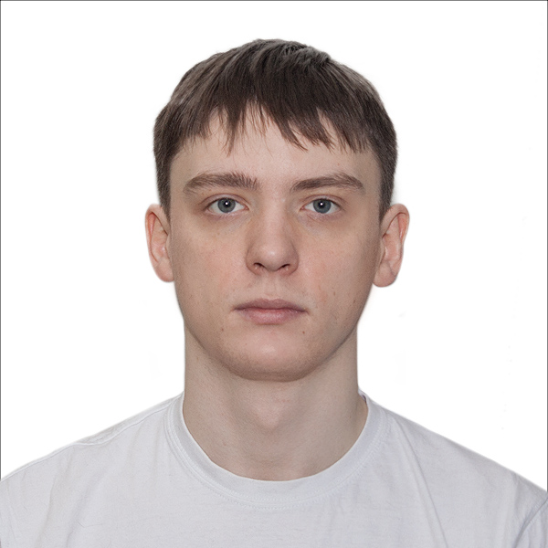

Dmitrii Avdiukhin

Ph.D. student, Indiana University (2017-current)
Advisor:
Grigory Yaroslavtsev
Research interests
Convex and nonconvex optimization
Machine learning
Hierarchical clustering
I'm graduating in May 2023 and looking for a postdoc position. I'm interested in continuous optimization, machine learning, hierarchical clustering and algorithms. Please contact me if you are interested:
davdyukh (at) iu (dot) edu.
My CV
Selected Publications
AAAI 2023
D. Avdiukhin,
G. Yaroslavtsev
,
D. Vainstein
,
O. Fischer
,
S. Das
, and
F. Mirza
. "Tree Learning: Optimal Algorithms and Sample Complexity"
NeurIPS 2021
D. Avdiukhin., and
G. Yaroslavtsev
. "Escaping Saddle Points with Compressed SGD"
[paper]
ICML 2021
D. Avdiukhin., and
S. Kasiviswanathan
. "Federated Learning under Arbitrary Communication Patterns"
[paper]
AAAI 2021
D. Avdiukhin., S. Naumov, and
G. Yaroslavtsev
. "Objective-Based Hierarchical Clustering of Deep Embedding Vectors"
[paper]
VLDB 2019
D. Avdiukhin,
S. Pupyrev
and
G. Yaroslavtsev
. “Multi-Dimensional Balanced Graph Partitioning via Projected Gradient Descent”
[paper]
[Check this link for the list of all publications]
Experience
Summer 2022
Research Intern
, Amazon.
Demonstration selection for few-shot learning for small language models.
Summer 2020
Research Intern
, Amazon.
Federated Learning under weak assumptions
Summer 2019
Research Intern
, Amazon, New York.
Improving accuracy and performance of graph convolutional networks
Summer 2018
Software Engineer
, Pro Unlimited @ Facebook, Menlo Park.
Implementing balanced graph partitioning algorithm
2016-2017
Researcher
, ITMO University.
Model generation from execution traces
2013-2016
Software Engineer
. JetBrains, Saint Petersburg.
SQL dialects support
2012-2013
Software Engineer
. Lanit Tercom, Saint Petersburg.
Participating in project of migration a system from SQL server to Oracle
Talks and Posters
OPT 2022
Poster
“HOUDINI: Escaping from Moderately Constrained Saddles”
OPT 2022
Poster
“Bidirectional Adaptive Communication for Heterogeneous Distributed Learning”
NeurIPS 2021
Poster
“Escaping Saddle Points with Compressed SGD”
OPT 2020
Paster
“Escaping Saddle Points with Compressed SGD”
VLDB 2019
Talk
“Multi-Dimensional Balanced Graph Partitioning via Projected Gradient Descent”
KDD 2019
Talk
“Adversarially Robust Submodular Maximization under Knapsack Constraints”
Yandex, Moscow,
Russia, 2019
Talk
"Multi-Dimensional Balanced Graph Partitioning via Projected Gradient Descent"
Fellowships
2019
Nominated for Google PhD Fellowship Program by Indiana University
2019
Nominated for
Microsoft Fellowship
by Indiana University
Teaching
Fall 2022
"Introduction to Algorithm Design and Analysis"
(undergraduate). Indiana University, Bloomington, CSCI-B403. Associate Instructor.
Spring 2022
"Math & logic for cognitive science"
(graduate). Indiana University, Bloomington, CSCI-B590. Associate Instructor.
Spring 2020
"Applied Algorithms"
(graduate). Indiana University, Bloomington, CSCI-B505. Head Associate Instructor.
Spring 2019
"Data Structures"
(Honors, undergraduate)}. Indiana University, Bloomington, CSCI-H343. Associate Instructor.